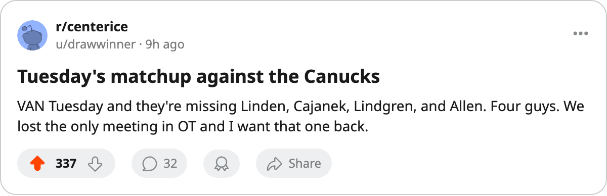

LEAFS 5, SABRES 1: Buffalo swept in 4, and Vancouver visits Tuesday
Toronto closes a 4-game season series without a loss, turns to a Canucks team missing 4 hurt, and watches 12 days tick toward the deadline
 Sam OkaforLeafs beat reporter · Queen City Telegram
Sam OkaforLeafs beat reporter · Queen City Telegram
Toronto won 5-1 at  Buffalo Sabres on 2005-03-06, outshooting the Sabres 22 to 24 on the road, to close a 4-game season series against Buffalo without a loss. The
Buffalo Sabres on 2005-03-06, outshooting the Sabres 22 to 24 on the road, to close a 4-game season series against Buffalo without a loss. The  Toronto Maple Leafs Maple Leafs are 47-12-4, 108 points, and riding a 3-game winning streak with 14 games left.
Toronto Maple Leafs Maple Leafs are 47-12-4, 108 points, and riding a 3-game winning streak with 14 games left.
Buffalo finished 23-30-7, 65 points, third in the Northeast behind Toronto and  Boston Bruins at 78. The Sabres scored once against the Leafs on 2005-03-06 and sit on a 2-game losing streak. Toronto beat Buffalo in all 4 meetings, every one in regulation.
Boston Bruins at 78. The Sabres scored once against the Leafs on 2005-03-06 and sit on a 2-game losing streak. Toronto beat Buffalo in all 4 meetings, every one in regulation.
Vancouver visits with 4 hurt
 Vancouver Canucks arrives on 2005-03-08 at 34-19-6, 90 points, on a 2-game losing streak. The Canucks have scored 248 goals in 67 games and allowed 219. They are 18-16 on the road.
Vancouver Canucks arrives on 2005-03-08 at 34-19-6, 90 points, on a 2-game losing streak. The Canucks have scored 248 goals in 67 games and allowed 219. They are 18-16 on the road.
Vancouver has 4 players on injured reserve.  Trevor Linden83 carries a groin, back 2005-04-13.
Trevor Linden83 carries a groin, back 2005-04-13.  Petr Cajanek75 has a foot, back 2005-04-16.
Petr Cajanek75 has a foot, back 2005-04-16.  Mats Lindgren74 (hand) returns 2005-03-29.
Mats Lindgren74 (hand) returns 2005-03-29.  Bryan Allen75 (hand) is out until 2005-04-24.
Bryan Allen75 (hand) is out until 2005-04-24.
These clubs met once this season, in overtime, and Vancouver won 5-4.
Toronto is 28-7 at home, the best mark in the Northeast, and has allowed 165 goals in 68 games. Vancouver's 248 goals scored are a different test than Buffalo's 210.
The west beckons after Tuesday
The schedule turns after the Canucks. Toronto plays at  Edmonton Oilers on 2005-03-10 and visits
Edmonton Oilers on 2005-03-10 and visits  Calgary Flames on 2005-03-13, where
Calgary Flames on 2005-03-13, where  Sami Salo82 will dress against the club he left on 2005-03-04. Edmonton carries a 4-game winning streak into the 2005-03-10 game at 27-19-8, 86 points.
Sami Salo82 will dress against the club he left on 2005-03-04. Edmonton carries a 4-game winning streak into the 2005-03-10 game at 27-19-8, 86 points.
What the calendar has as the trade deadline falls on 2005-03-19, 12 days away. Toronto has no 2C behind  Mats Sundin91, who has 76 points in 68 games at 19.8 minutes a night on $8.40M.
Mats Sundin91, who has 76 points in 68 games at 19.8 minutes a night on $8.40M.  Brad Richards87 has 61 points in 66 games at 16.6 minutes a night. Petr Chlup86, 19, plays the 42C slot with 41 points in 57 games.
Brad Richards87 has 61 points in 66 games at 16.6 minutes a night. Petr Chlup86, 19, plays the 42C slot with 41 points in 57 games.
